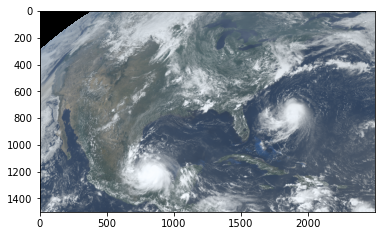
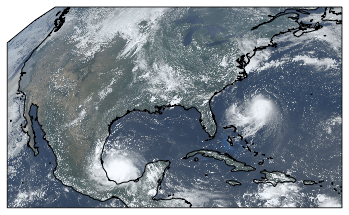
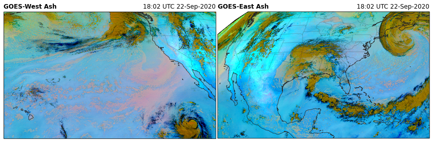
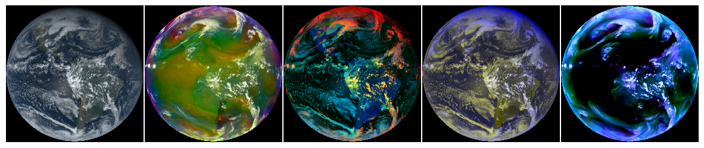

Brian Blaylock
September 26, 2019
GOES ABI RGB Recipes¶
I have gathered several RGB recipies from the RAMMB CIRA website, including:
TrueColor
FireTemperature
AirMass
DayCloudPhase
DayConvection
DayLandCloudFire
WaterVapor
DaySnowFog
etc.
These recipies are provided by the rgb custom accessor. This accessor is avaialble when you import goes2go.
For more details on how to generate these plots, see the example on the Unidata gallery.
Simple RGB Figure¶
At the most simple level, here is how to produce an RGB from the GOES ABI data.
[2]:
from goes2go.data import goes_latest
import matplotlib.pyplot as plt
[3]:
# Get an ABI Dataset
G = goes_latest()
# Create RGB and plot
plt.imshow(G.rgb.TrueColor())
_______________________________
| Satellite: noaa-goes16 |
| Product: ABI-L2-MCMIPC |
| Domain: C |
📦 Finished downloading [1] files to [/p/cwfs/blaylock/data/noaa-goes16/ABI-L2-MCMIPC].
📚 Finished reading [1] files into xarray.Dataset.
[3]:
<matplotlib.image.AxesImage at 0x2b7d51ea2a90>

Cartopy RGB Figure¶
The RGB can easily be added to a Cartopy axis
[7]:
ax = plt.subplot(projection=G.rgb.crs)
ax.imshow(G.rgb.TrueColor(), **G.rgb.imshow_kwargs)
ax.coastlines()
[7]:
<cartopy.mpl.feature_artist.FeatureArtist at 0x2b7d8accf5e0>

All available RGB recipes¶
[2]:
from goes2go.data import goes_nearesttime, goes_latest
import cartopy.crs as ccrs
import matplotlib.pyplot as plt
# Function from Carpenter_Workshop: https://github.com/blaylockbk/Carpenter_Workshop
from toolbox.cartopy_tools import common_features
/p/home/blaylock/BB_python/Carpenter_Workshop/toolbox/cartopy_tools.py:33: UserWarning: No module named 'geopandas' Without geopandas, you cannot subset some NaturalEarthFeatures, like "Major Highways" from roads.
warnings.warn(
[3]:
#G16 = goes_latest()
#G17 = goes_latest(satellite=17)
G16 = goes_nearesttime('2020-9-22 18')
G17 = goes_nearesttime('2020-9-22 18', satellite=17)
_______________________________
| Satellite: noaa-goes16 |
| Product: ABI-L2-MCMIPC |
| Domain: C |
📦 Finished downloading [1] files to [/p/cwfs/blaylock/data/noaa-goes16/ABI-L2-MCMIPC].
📚 Finished reading [1] files into xarray.Dataset.
_______________________________
| Satellite: noaa-goes17 |
| Product: ABI-L2-MCMIPC |
| Domain: C |
📦 Finished downloading [1] files to [/p/cwfs/blaylock/data/noaa-goes17/ABI-L2-MCMIPC].
📚 Finished reading [1] files into xarray.Dataset.
[4]:
rgb_products = [i for i in dir(G16.rgb) if i[0].isupper()]
for product in rgb_products:
fig = plt.figure(figsize=(15, 12))
ax17 = fig.add_subplot(1, 2, 1, projection=G17.rgb.crs)
ax16 = fig.add_subplot(1, 2, 2, projection=G16.rgb.crs)
for ax, G in zip([ax17, ax16], [G17, G16]):
RGB = getattr(G.rgb, product)()
common_features('50m', STATES=True, ax=ax)
ax.imshow(RGB, **G.rgb.imshow_kwargs)
ax.set_title(f"{G.orbital_slot} {product}", loc='left', fontweight='bold')
ax.set_title(f"{G.t.dt.strftime('%H:%M UTC %d-%b-%Y').item()}", loc="right")
plt.subplots_adjust(wspace=0.01)
plt.savefig(f'../docs/_static/{product}', bbox_inches='tight')





[ ]:
Full Disk¶
[5]:
g = goes_nearesttime('2021-01-01 18:00', satellite=16, product='ABI', domain='F')
_______________________________
| Satellite: noaa-goes16 |
| Product: ABI-L2-MCMIPF |
| Domain: F |
📦 Finished downloading [1] files to [/p/cwfs/blaylock/data/noaa-goes16/ABI-L2-MCMIPF].
📚 Finished reading [1] files into xarray.Dataset.
[3]:
# Original TrueColor
tc = TrueColor(g, night_IR=False)
# Rick Kohrs's Natural Color
nc = NaturalColor(g, night_IR=False)
[8]:
#%config InlineBackend.print_figure_kwargs = {'facecolor' : 'k'}
%config InlineBackend.print_figure_kwargs = {'facecolor' : 'none'}
#%config InlineBackend.print_figure_kwargs = {'facecolor' : 'w'}
fig, (ax1, ax2) = plt.subplots(1,2, figsize=[20,10], subplot_kw=dict(projection=g.rgb.crs))
for ax in [ax1, ax2]:
common_features(ax=ax, STATES=True)
ax1.imshow(g.rgb.TrueColor(), **g.rgb.imshow_kwargs)
ax1.set_title('True Color', color='w')
ax1.axis('off')
ax2.imshow(g.rgb.NaturalColor(), **g.rgb.imshow_kwargs)
ax2.set_title('Natural Color', color='w')
ax2.axis('off')
plt.subplots_adjust(wspace=0.01)
fig.set_facecolor('k')
plt.savefig('../docs/_static/True-vs-Natural_color', bbox_inches='tight')

[ ]:
#%config InlineBackend.print_figure_kwargs = {'facecolor' : 'k'}
#%config InlineBackend.print_figure_kwargs = {'facecolor' : 'none'}
%config InlineBackend.print_figure_kwargs = {'facecolor' : 'w'}
RGB Sample¶
[3]:
# Obtain a GOES ABI multichannel image
g = goes_nearesttime('2020-12-13 18:00',
satellite=16, product='ABI', domain='F')
_______________________________
| Satellite: noaa-goes16 |
| Product: ABI-L2-MCMIPF |
| Domain: F |
📦 Finished downloading [1] files to [/p/home/blaylock/data/noaa-goes16/ABI-L2-MCMIPF].
📚 Finished reading [1] files into xarray.Dataset.
[11]:
products = ['NaturalColor', 'AirMass', \
'DayCloudPhase', 'DayCloudConvection',
'WaterVapor']
fig, axes = plt.subplots(1, len(products), figsize=[15,3.5], dpi=100)
for product, ax in zip(products, axes):
nc = getattr(g.rgb, product)()
ax.imshow(nc)
ax.axis('off')
plt.subplots_adjust(wspace=.01)
plt.savefig(f'../docs/_static/RGB_sample', bbox_inches='tight', facecolor='k')

🚀 Rocket Plume¶
A new RGB recipie from CIMSS
Obtain the Mesoscale scan to identify rocket plume, because the time resolution is every 30 seconds when both mesoscale scans are in the same location
[12]:
import matplotlib.pyplot as plt
import pandas as pd
from goes2go.data import goes_nearesttime
from toolbox.cartopy_tools import common_features
[13]:
# Rocket plume at 00:29 UTC 16 November 2020 for SpaceX crewed mission
g = goes_nearesttime('2020-11-16 00:29:50', product="ABI", satellite='goes16', domain='M')
_______________________________
| Satellite: noaa-goes16 |
| Product: ABI-L2-MCMIPM |
| Domain: M |
📦 Finished downloading [1] files to [/p/cwfs/blaylock/data/noaa-goes16/ABI-L2-MCMIPM].
📚 Finished reading [1] files into xarray.Dataset.
[14]:
fig = plt.figure(figsize=(15, 12))
str_date_16 = f"{pd.to_datetime(g.time_coverage_start.item()):%d-%b-%Y %H:%M UTC}"
# Create axis with Geostationary projection
ax16_wide = fig.add_subplot(1, 2, 1, projection=g.rgb.crs)
ax16_zoom = fig.add_subplot(1, 2, 2, projection=g.rgb.crs)
# Add common features to map (coastlines and state borders)
common_features('50m', ax=ax16_wide, STATES=True, color='white')
common_features('10m', ax=ax16_zoom, STATES=True, color='white')
# GOES-East
ax16_wide.set_title(f'GOES-East RocketPlume', loc='left', fontweight='bold')
ax16_wide.set_title(f'{str_date_16}', loc='right')
ax16_wide.imshow(g.rgb.RocketPlume(), **g.rgb.imshow_kwargs)
ax16_zoom.set_title(f'SpaceX Crewed Misison Launch', loc='center')
ax16_zoom.imshow(g.rgb.RocketPlume(), **g.rgb.imshow_kwargs)
ax16_zoom.center_extent(-80.2, 29.1, pad=20_0000)
left, right, bottom, top = ax16_zoom.get_extent()
lons = [left, right, right, left, left]
lats = [top, top, bottom, bottom, top]
ax16_wide.plot(lons, lats, color='navy')
plt.subplots_adjust(wspace=0.01)
#plt.savefig(f'../images/{func.__name__}', bbox_inches='tight')
plt.savefig(f'../docs/_static/RocketPlume', bbox_inches='tight')
/p/home/blaylock/anaconda3/envs/goes2go/lib/python3.8/site-packages/cartopy/mpl/style.py:90: UserWarning: facecolor will have no effect as it has been defined as "never".
warnings.warn('facecolor will have no effect as it has been '

[ ]: